Gerade habe ich noch gedacht: "Wow, den Jetlag habe ich gut überstanden". Ich schlafe absolut schlecht und wache zu einer asozialen Zeit auf. Das bedeutet immerhin, dass uns genug Zeit bleibt, in Ruhe zu packen, ein kurzes Frühstück zu essen und dann mit unserem schweren Gepäck in den Bus zu zurren und irgendwie, erstaunlich leicht, den Weg in den Shinkansen nach Kumamoto zu finden.
Der Shinkansen rauscht nur so dahin. Es ist der Kyushu Shinkansen, der die wichtigsten Städte der Südinsel miteinander verbindet. Die Strecke ist schön, laut Reiseführer. Doch davon bekomme ich nichts mit, denn ich hole direkt den fehlenden Nachtschlaf nach.
Kumamoto ist deutlich größer als Kagoshima, beinahe 800.000 Einwohner. Das merkt man am großen Bahnhof und an dem riesigen Vorplatz, über den wir bei strahlender Sonne zur Bahn laufen. Es ist sehr heiß, und das Gepäck hilft nicht.
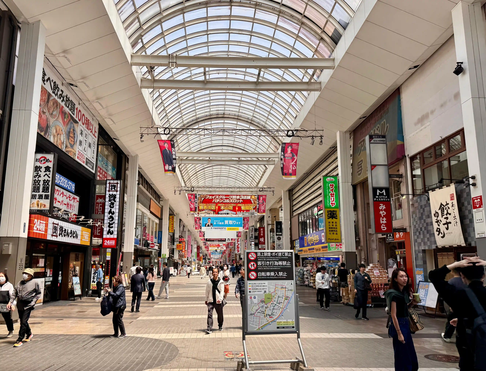
Wie der Zufall es so will, liegt unser nächstes Hotel neben einer der vielen Einkaufspassagen Kumamotos. Alleine das Foyer verspricht einen guten Aufenthalt: Vor dem Check-in stehen bereits kleine Bürsten, Rasierer, Baumwolltücher und Abschminksachen für das Onsen, das öffentliche Bad, das der USP des Hotels ist.
Es ist geschlechtergetrennt und liegt im obersten Stock, sodass man von dort aus einen tollen Blick über Kumamoto hat. Aber das mit eigenen Augen zu sehen, ist der Plan für abends. Jetzt laden wir erst mal die Koffer ab und Mama fragt das Hotelpersonal mit mittelmäßigen Englischkenntnissen nach einem Zimmer mit guter Aussicht.
Nachdem sie uns ursprünglich abgelehnt hatten, kommt eine Mitarbeiterin dann doch noch zu uns, als wir gerade entscheiden, was wir bis zum Nachmittag mit unserer Zeit anfangen, um uns begeistert zu sagen, dass sie uns in ein Top-Zimmer umgebucht hat.
Und hier: Cliff-Hanger 😋
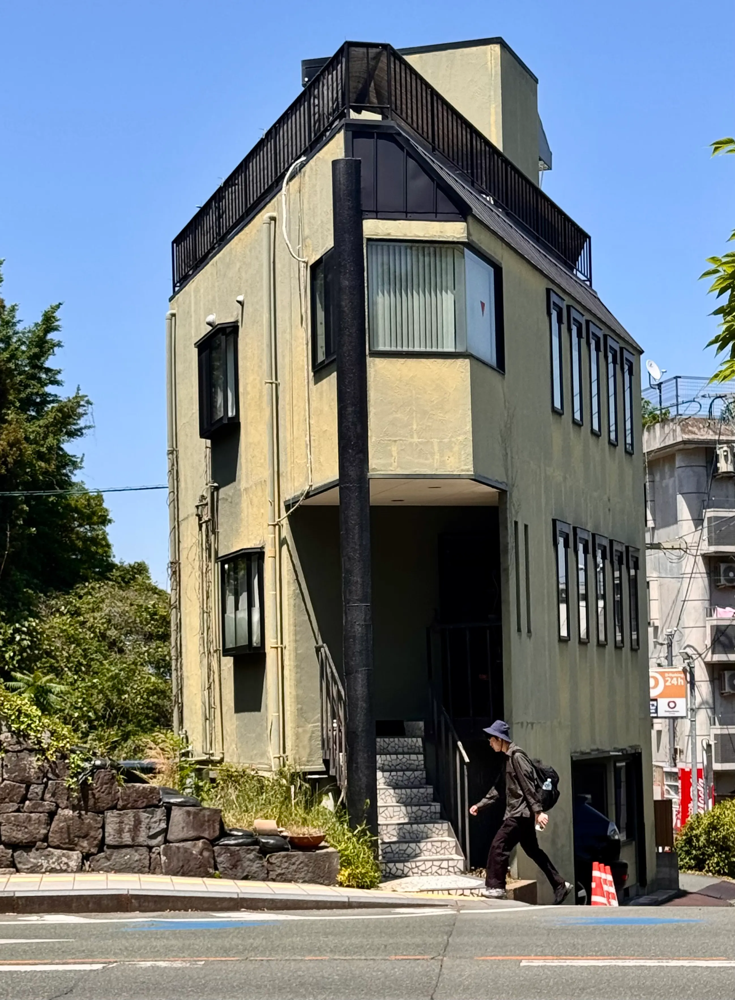
Heute ist Muttertag, deswegen müssen wir diesen höchsten aller Feiertage natürlich zelebrieren. Wir suchen uns ein auf Vintage gemachtes Café mit ganz wunderbaren, kunstvollen Kuchen. Die meisten Backwaren sind in Japan kleine Kunstwerke. Akkurat mit Früchten besetzt und präzise mit Creme bestrichen.
Dieses Café ist nicht anders. Wir trinken einen Tee (das Thema ist britisch, also gibt es keinen Kaffee) und genießen Erdbeerkuchen, bevor wir weiterlaufen.
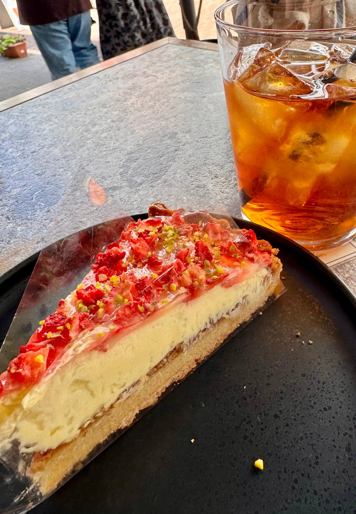
Ein bisschen Hintergrund zu Kumamoto: 2016 gab es ein ziemlich starkes Erdbeben, das die Stadt in Mitleidenschaft gezogen hat, vor allem aber die historische Burg Kumamoto. Sie war – und ist immer noch – eine der Hauptsehenswürdigkeiten, wurde aber beinahe vollkommen zerstört. Der Umbau ist noch zugange und wird wohl auch bis 2031 dauern.
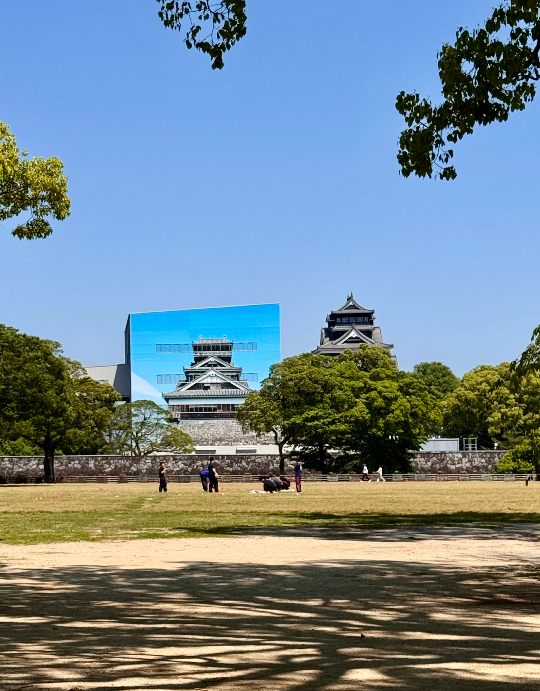
Wir besichtigen sie trotzdem, sparen uns allerdings die teuren Eintrittskarten, da wirklich viele der Gebäude in dicke Planen eingewickelt sind. Auf den Infotafeln sieht man Bilder von vorher und direkt nach dem Beben – die Unterschiede sind gravierend, und es wurde schon vieles wieder hergerichtet.
Statt zur Burg gehen wir jetzt durch den anliegenden Park. In der Mitte ist eine riesige Wiese, auf die die Sonne knallt. Im Schatten eines großen Baumes probt eine Klasse Schüler für einen Auftritt. Sie tanzen mit riesigen Fahnen und Fächern zu traditioneller Musik. Wir schauen uns die Probe ein bisschen an und wagen uns dann tiefer in den Park.
Es ist nicht viel los und schon von Weitem hören wir lautes Pfeifen und Rufe.
Wir folgen dem Lärm und landen in einem kleinen Baseball-Stadion. Die Türen sind offen und wir sind kaputt vom vielen Laufen, deswegen setzen wir uns kurzerhand auf die Tribüne.
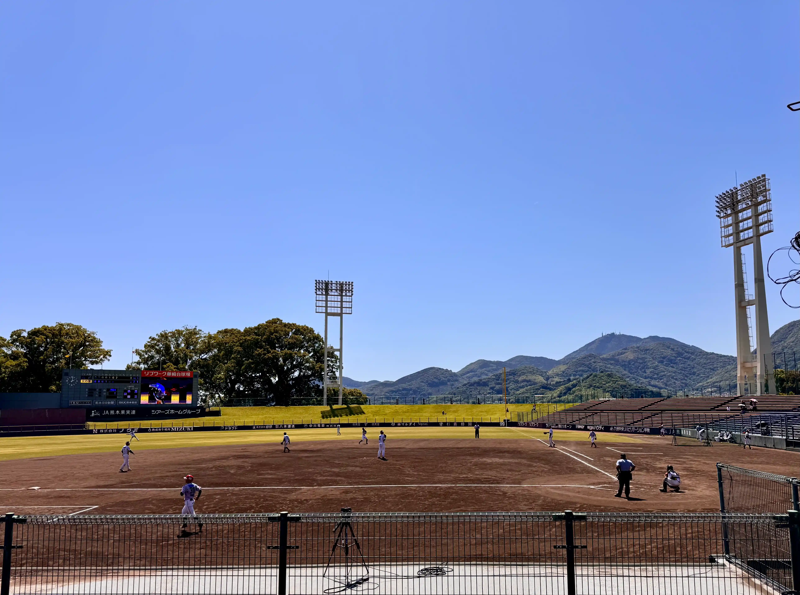
Da weder Mama noch ich uns jemals mit Baseball befasst haben, verstehen wir herzlich wenig von dem Geschehen. Ein Mann wirft einen Ball, der andere fängt ihn oder fängt ihn nicht, ein anderer läuft los oder eben nicht… Wir bleiben trotzdem sitzen. Die Cheerleader auf der anderen Seite des kleinen Stadions machen einen guten Job, sodass ich direkt einen sehr hartnäckigen Ohrwurm von dem Jingle habe.
Irgendwann reicht es dann doch und der Blick auf die Uhr verrät uns, dass wir nun auch endlich ins Hotel einchecken können. Mit Sonnenschirmen bewaffnet laufen wir die 25 Minuten zurück zum Hotel, vorbei an begrünten Malls, kleinen Häusern und Einkaufsstraßen.
Mamas Bitte hat sich auf jeden Fall gelohnt: Wir rollern mit unseren Koffern durch die anonymen Hotelflure und landen in einem Zimmer, das weit größer ist als jedes Zimmer, das wir bislang in Japan hatten. Das Highlight: Die Rückwand besteht komplett aus Glas. Da wir im 17. Stock sind, können wir bis zur Burg Kumamoto schauen. Vor den Fenstern ist das Sofa gebaut, sodass wir uns beide darauf legen können und die Aussicht genießen.
Aber wir haben noch genug zu tun, also heißt es nur kurz Mittagspause machen und dann weiter und mal schauen, was die Mall in der Nähe hier so zu bieten hat.
Die Antwort ist: Vieles. Wir kaufen wieder schöne Dinge. Im Einkaufszentrum steht eine lebensgroße Statue von dem Maskottchen der Stadt (ja, Kumamoto hat ein Maskottchen – einen großen Schwarzbären namens Kumamon), neben dem wir Fotos machen.
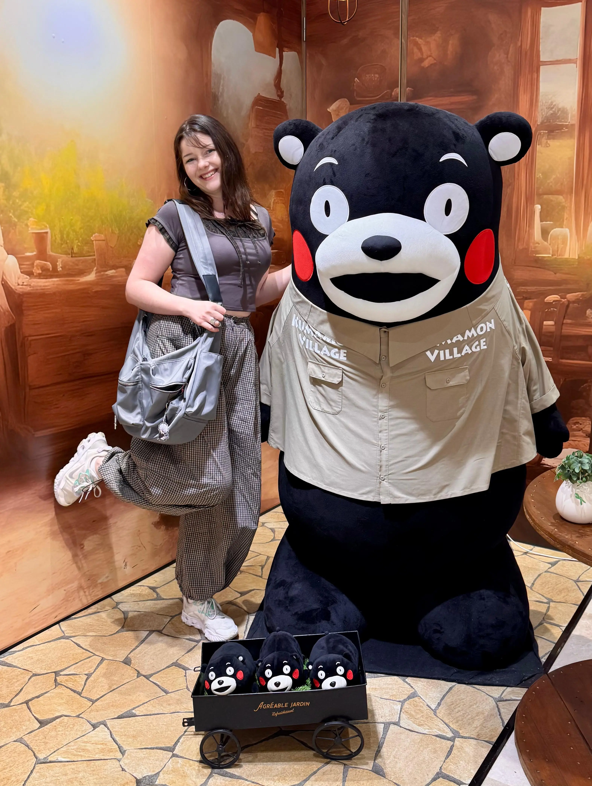
Als wir die Mall wieder verlassen, ist eine Art Straßenfest davor aufgebaut, mit bunten Lampions und Fake-Rasen auf dem Boden. Das Thema: Deutschland! Es gibt viel Fleisch und Bier und scheinbar ist das ein kleiner Touristenmagnet. Wir müssen schmunzeln, als wir die Fässer mit Beck's sehen. Der Wind ist endlich ein bisschen kühler geworden nach der Hitze des Tages und die kleinen Lämpchen des Marktes wippen im Takt.
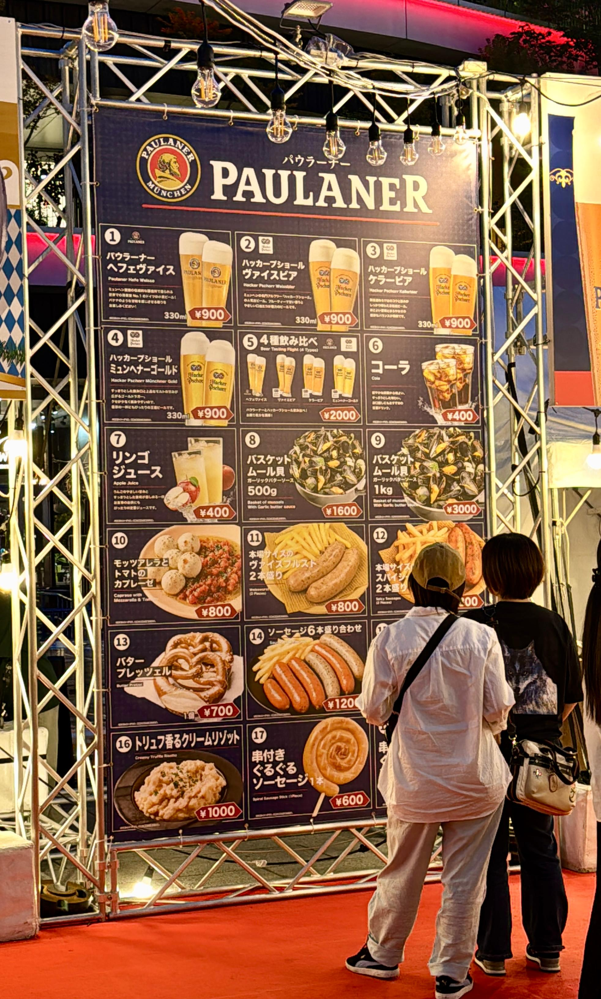
Wir überlegen kurz, uns ein Restaurant zu suchen, und entscheiden uns dann doch für ein Abendbrot von 7-Eleven. Es gibt Sandwiches gefüllt mit Eiersalat, Gurkensalat und unser Lieblings-Vanilleeis-Mochi. Wir speisen köstlich mit Blick auf die Burg Kumamoto und die Stadt.
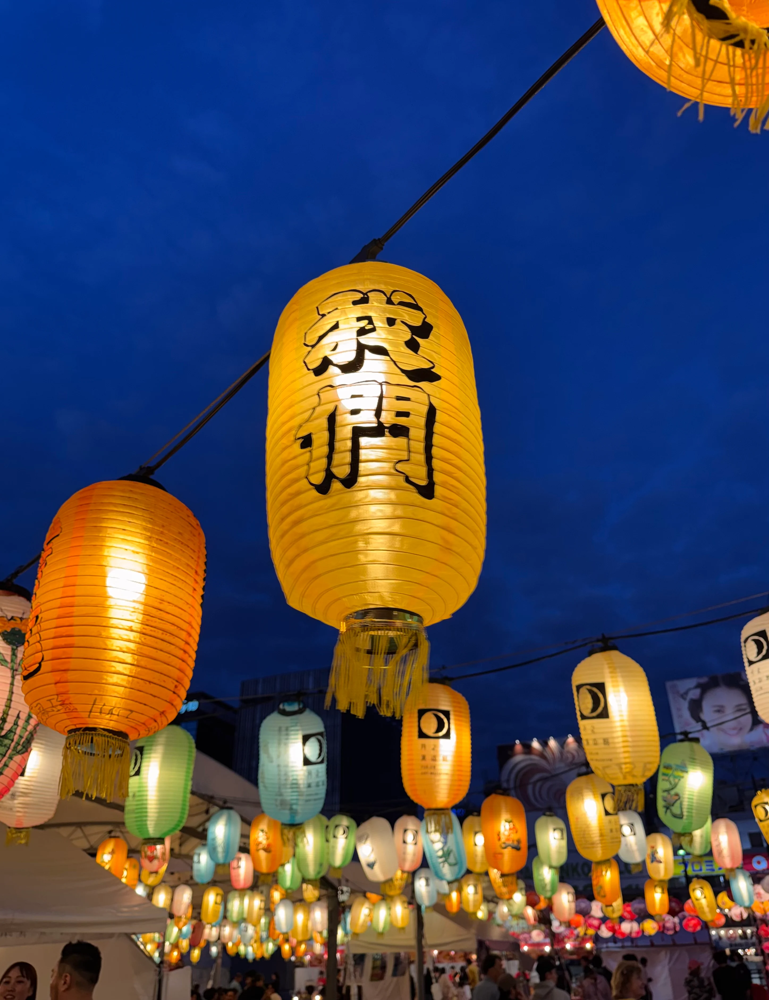
Doch der Tag ist noch lange nicht vorbei: Schließlich gibt es das Rooftop-Onsen! Die Frage ist nur, was wir anziehen, um dort hinzugehen. Im Onsen selbst ist man komplett nackt, aber mit Straßenkleidung hinzugehen und die dann wieder anzuziehen, nachdem man sich die oberste Hautschicht komplett mit einem Baumwolltuch abgerieben und danach 15 Minuten im lauwarmen Wasser gedümpelt ist? Eher nicht so schön.
Also ist der Plan: den Schlafanzug anziehen, der vom Hotel zur Verfügung gestellt wird, und auch die Hotel-Schlappen anziehen. Das Problem ist, dass ich tendenziell größer bin als die Japaner. Meine Hose hat also ordentlich Hochwasser und die Ärmel des Schlafanzuges gehen bis zur Hälfte meiner Unterarme. Schon da haben Mama und ich den ersten Lachkrampf.
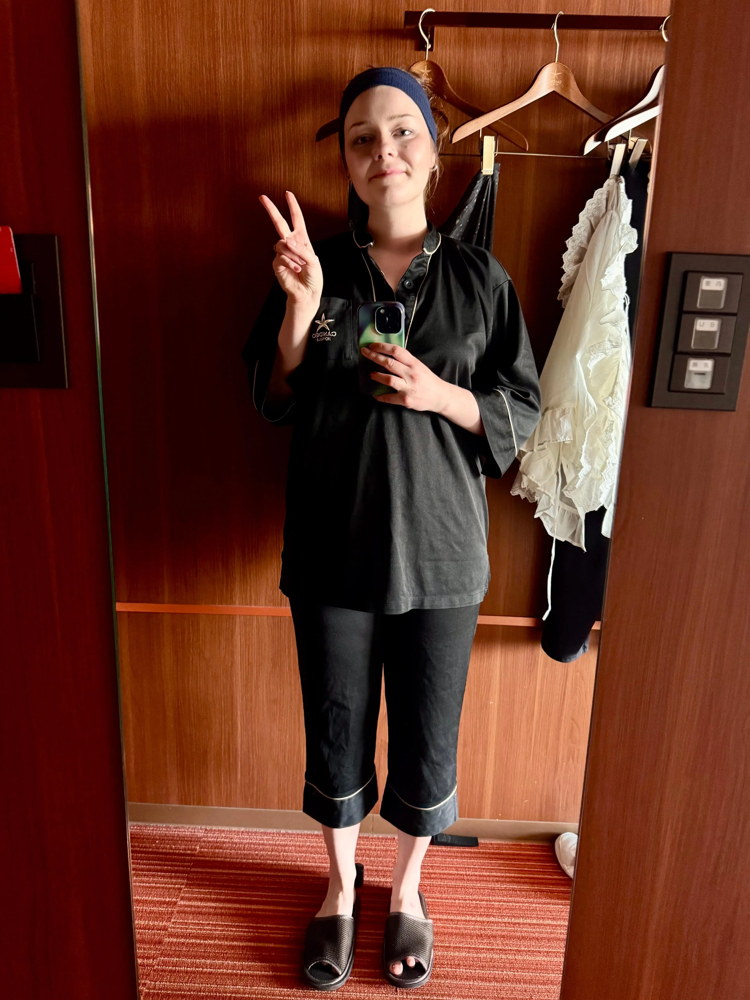
Der zweite Lachkrampf kommt, als wir im Schlafanzug, ungeschminkt, in der Hotellobby stehen, von wo aus man ins Onsen geht. Um uns herum sind andere Touristen in schicker Abendkleidung und das adrette Personal. Wir kämpfen uns durch den Cringe und in die Umkleide. Ich laufe an drei Schildern mit Verhaltensregeln vorbei, auf denen steht, dass Tattoos verboten sind, und hänge mir auf dem Weg in das Bad mein Onsen-Tuch über den Arm.
Vor dem Becken, das etwas mehr als kniehoch mit Wasser gefüllt ist, sind mit hüfthohen Wänden kleine Duschkabinen abgetrennt. In jedem dieser Abteile steht ein kleiner Hocker, Shampoo, Duschgel, Conditioner und Gesichtsreinigung. Neben dem kleinen Wandspiegel hängt eine Duschbrause.
Mama und ich gehen ans Werk: Man reinigt sich vor dem Betreten des Bades gründlichst. Ich schaue einmal hoch, um zu gucken, wie die anderen Frauen das machen (immer die Angst in Japan: Mache ich etwas falsch?) und werde von einem riesigen Arschgeweih begrüßt. Also war meine Sorge um mein kleines Armtattoo vollkommen umsonst.
Wir waschen uns zu Ende und gehen dann durch eine Tür nach draußen, wo auf der Dachterrasse, geschützt vor allen Blicken, das Bad über Kumamoto liegt. Wir dümpeln über der Stadt, genießen die Aussicht und die Entspannung.
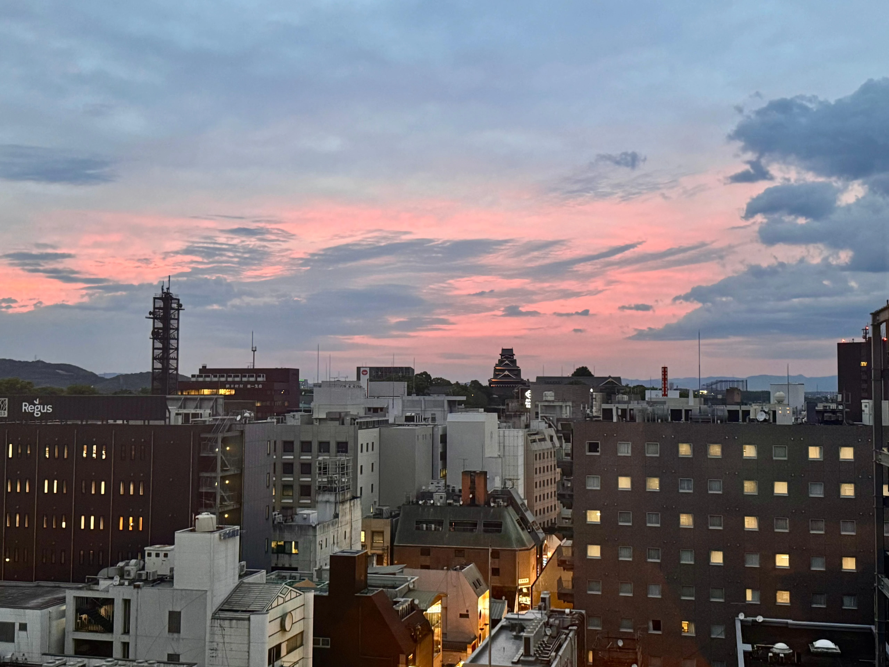
Am nächsten Tag ist es heiß. Wir starten ihn, indem wir umherirren. Ziel ist es, heute zu Japans größtem noch aktiven Vulkan, dem Aso, zu kommen. Eigentlich ist der Weg gar nicht kompliziert, wenn man ihn erst mal weiß, aber Google Maps sucht uns erst einen schnellen, aber wahnsinnig komplizierten Weg raus.
Die Stimmung ist nicht die beste, als wir endlich dann doch einfach vom Hauptbahnhof aus losfahren. Wir hatten uns in der Wartezeit vorher noch die Bäuche vollgeschlagen mit Kostproben aus den Souvenir-Läden des Bahnhofs. Die Japaner scheinen gerne lokale Spezialitäten als Mitbringsel zu kaufen: hübsche Kekse, Cracker oder Fleisch. Wir kaufen zwar nichts, aber die hübsch verpackten Kleinigkeiten heben die Laune.
Und sie wird sogar noch besser, als unser Zug einfährt: Es ist der Aso-Boy, ein Zug, der ähnlich wie Kumamoto ein Maskottchen hat. Dieses Mal ist es allerdings ein kleiner schwarzer Hund, der außen an den Zug gepflastert ist, und auch innen ist alles mit Bildern vom Aso-Boy dekoriert. Es ist ganz wunderbar.
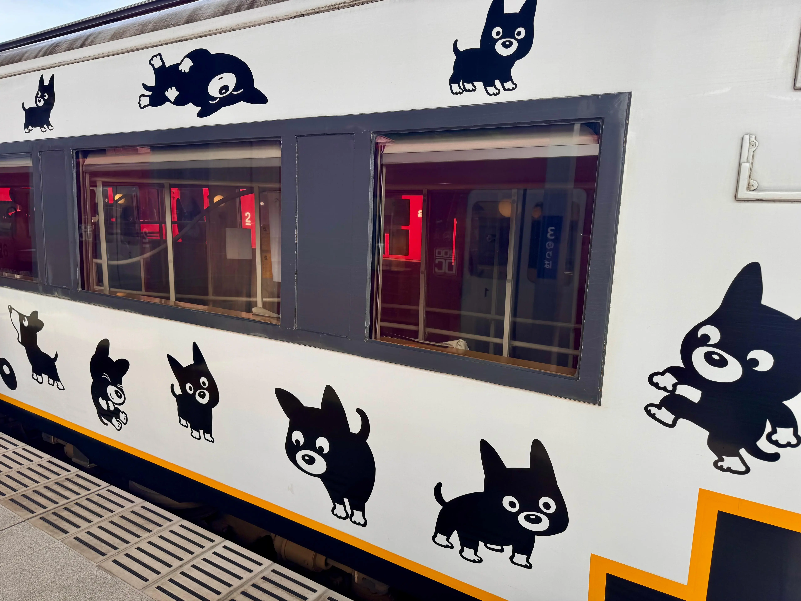
Wir sitzen bequem und kaum sind wir losgefahren, kommt auch schon eine Schaffnerin und teilt uns kleine Karten aus, auf die man einen Stempel mit dem Hündchen draufsetzen kann, als kleines Andenken an die Zugfahrt.
Ich schreibe ein bisschen diesen Blog und genieße zwischendurch die Landschaft. Die Fahrt dauert ungefähr eine Stunde und nach ungefähr einer Dreiviertelstunde erreichen wir den gigantischen Krater eines Ausbruchs, der vor vielen, vielen Jahrtausenden passiert ist.
Der Krater des vorzeitlichen Aso ist 15 km breit und wird heutzutage landwirtschaftlich genutzt. Sogar ein kleiner Ort liegt im Krater und natürlich der „neue“ Aso. Ein bisschen befremdlich ist es schon, aus dem Zugfenster zu schauen und um sich herum gleichmäßige, gleich hohe Berge zu sehen – vor uns, hinter uns und neben dem Zug.
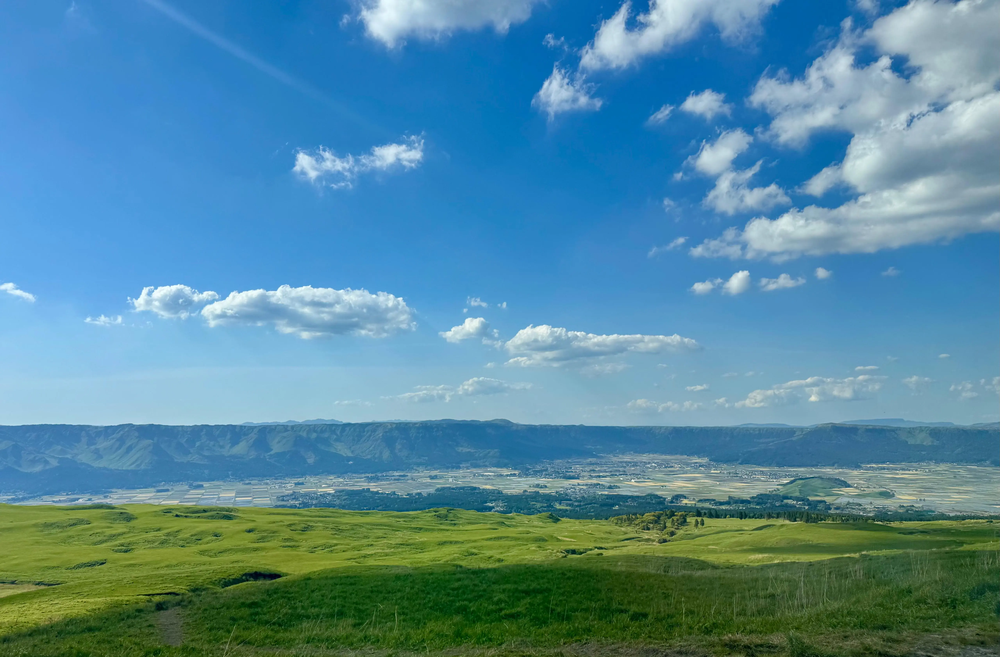
Am Bahnhof angekommen verabschieden wir uns vom Aso-Boy und kaufen Buskarten, um auch hoch zum Krater zu kommen. Wir warten ein bisschen und betrachten währenddessen kleine Wasserspiele gegenüber der Station. Ansonsten ist der Ort ein bisschen wie ausgestorben. Bis auf die 40 anderen Touristen natürlich.
Der Bus kommt und es gibt einen Platz, der für ein riesiges Kumamon-Plüschtier reserviert ist. Als Hilfe für alleinreisende Gäste. Mama und ich sitzen allerdings in der ersten Reihe und hören der viel zu lauten, übersteuerten Durchsage auf Japanisch zu, die uns etwas über die umliegende Landschaft erzählt.
Wir fahren durch ein kleines Wäldchen und dann durch hügelige Grasebenen, immer höher, bis wir am letzten Stopp, dem Krater, ankommen. Dazu muss man sagen, dass der Krater selbst leider seit zwei Monaten nicht mehr besichtigt werden kann, weil es ein tödliches Helikopter-Unglück im Krater gab.
Die „Geschlossen“-Schilder führen auch dazu, dass Mama und ich beinahe den Anfang des Wanderweges nicht finden, den wir uns im Vorhinein ausgesucht hatten. Was wir finden, ist ein großes Schild, das uns darauf hinweist, dass man doch bitte die Toilette benutzen soll, bevor man loswandert. Für alle, die nicht selbst daran denken können.
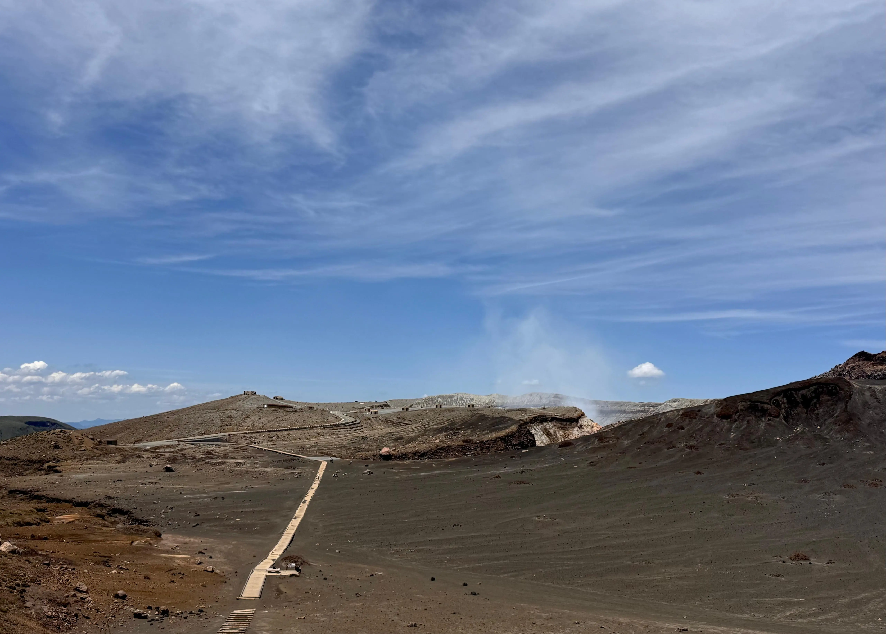
Schließlich laufen wir doch an einer Schranke vorbei und finden den Wanderweg. Erst unsicher, ob wir hier gerade etwas Verbotenes begehen, laufen wir weiter, bis uns noch andere Wanderer entgegenkommen. Also alles okay.
Der Weg führt auf Holzpfaden über schwarzes Land und Schutt und durch zerklüftete Felsen. Im Hintergrund raucht der Aso gemütlich vor sich hin. Es sind kaum andere Wanderer unterwegs und die wenigen sind meistens in Wanderkleidung und mit roten Warnhelmen bewaffnet. Mama und ich haben hingegen unsere hübschen Schühchen an und Mama sogar einen Rock.
Auf der Ebene neben dem Krater ist es fast unheimlich ruhig. Man hört keine Vögel, kaum Menschen, keinen Verkehr. Auf der Rast schauen wir hinunter in das saftig grüne Kratertal, das aus dieser grauen, steinigen Umgebung wirkt wie eine fremde Welt.
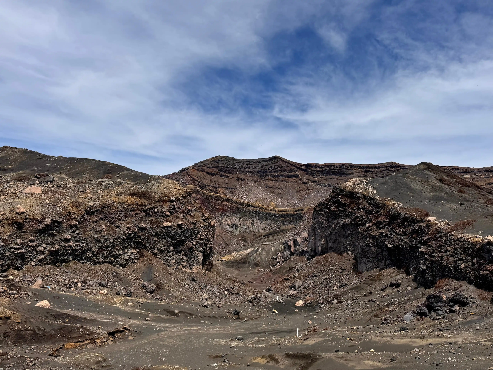
Bevor es zurück nach Kumamoto geht, fehlt allerdings noch der zweite Stopp auf der Aso-Reise: eine Ebene, ebenfalls oben auf dem Berg, auf halber Strecke zum Krater. Es ist hügelig und mit grünem Gras bewachsen. Einige der Berge und Krater haben eine richtige Zuckerhut-Form. Trotz der vielen Touristen, die es scheinbar nicht bis hoch auf den Aso geschafft haben, strahlt es eine Ruhe aus.
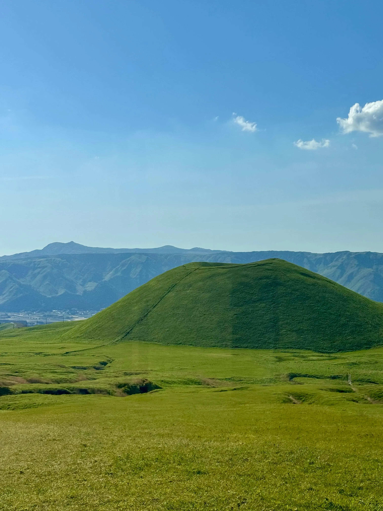
An den Essensständen und Restaurants gibt es viel Fleischlastiges und alles, was Fleisch ist, ist Pferd. Daneben können Kinder auf Pferden reiten. Ein bisschen skurril, aber Aso ist für das gute Pferdefleisch bekannt. Mama und ich begnügen uns mit einem süßen (vegetarischen) Reiskuchen und schlendern über die Ebene.
Ein Brautpaar macht ein Fotoshooting und wir können diverse TikTok-Trends sehen, die hier abgedreht werden. Wir halten noch ein bisschen inne, dann geht es zurück in die Großstadt. Dieses Mal teilen wir uns einen gewöhnlichen Vorortzug mit Schulkindern und Einheimischen.
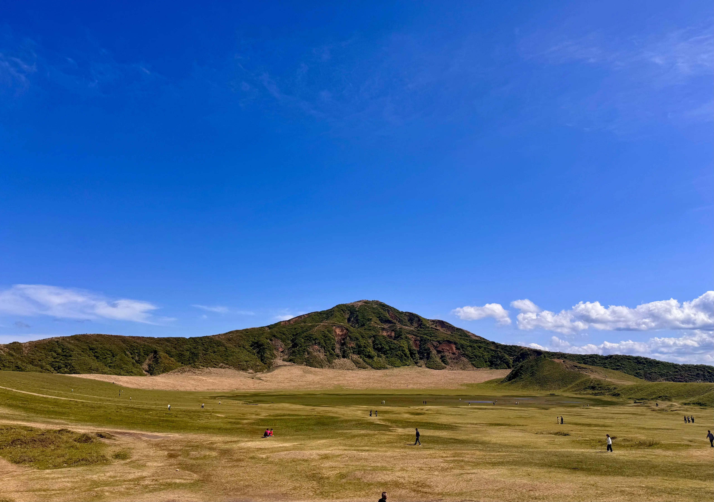
Mama ist müde von all den Erlebnissen, aber ich nutze das Rooftop-Onsen aus, solange wir es haben, und gehe alleine. Selbstsicher, im Schlafanzug, betrete ich den Vorraum, der ziemlich voll ist mit anderen Hotelgästen, die sich laut auf Chinesisch unterhalten.
Ich entkomme dem Trubel schnell, wasche mich wieder gründlich und lasse mich ins warme Wasser gleiten.
Ich lehne mit den Armen auf dem Beckenrand und schaue auf die glitzernden Lichter Kumamotos, während ich den Tag Revue passieren lasse. Unfassbar, dass ich hier bin. Unfassbar, dass dies bereits das zweite Mal in Japan ist! Mein 13-jähriges Ich würde ihren Augen nicht trauen. In dem Moment habe ich wirklich das Gefühl, mir einen Traum erfüllt zu haben, aus eigener Kraft. Ich bin stolz und glücklich.
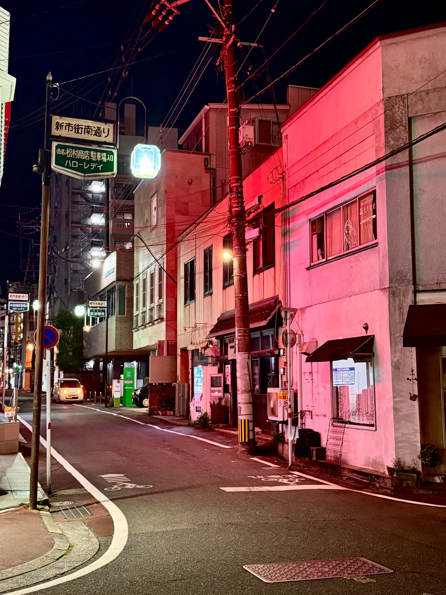
So entspannt der letzte Tag geendet hat, so entspannt geht der nächste Tag weiter. Ich wache hier zwar immer wesentlich früher auf, als ich es in Deutschland tun würde, aber es ist hier auch schon ab ca. 5 Uhr hell. Parks und Gärten öffnen also auch zu der Zeit ihre Pforten.
Ich esse schnell ein bisschen Frühstück – natürlich wieder vom FamilyMart, Omelett und Gurkensalat – und dann geht es auch schon los, in einen dieser Gärten. Unser Ziel ist der Suizenji, ein Landschaftsgarten, den es seit dem 17. Jahrhundert gibt.
Wir laufen auf dem Weg dorthin durch ein schickes Wohngebiet. Ein älterer Mann hegt und pflegt seine Rosen, die den kompletten Vorgarten ausfüllen, als wäre es eine Preis-Show. Ab und zu kommen uns Mütter mit ihren Kindern auf dem Weg zur Schule entgegen, aber ansonsten ist es ruhig.
Ich habe wieder den Eindruck, dass dieser Japan-Urlaub so vollkommen anders ist als der erste. Diese Ruhe hätten wir in Tokio und Kyoto niemals erlebt. Diese Hitze allerdings auch nicht. Da hilft der Sonnenschirm wenig und es ist noch nicht mal neun Uhr.
Im Suizenji ist es noch sehr ruhig. Man geht durch die Pforte am Eingang und sieht direkt den Blickfang des Gartens: eine Nachbildung des Fuji. An seinem Hang stehen kleine Bäume, deren Blätter wie Wolken um den „Berg“ herum schweben. Davor liegt ein Teich, in dem sich gigantische Koi-Karpfen tummeln.
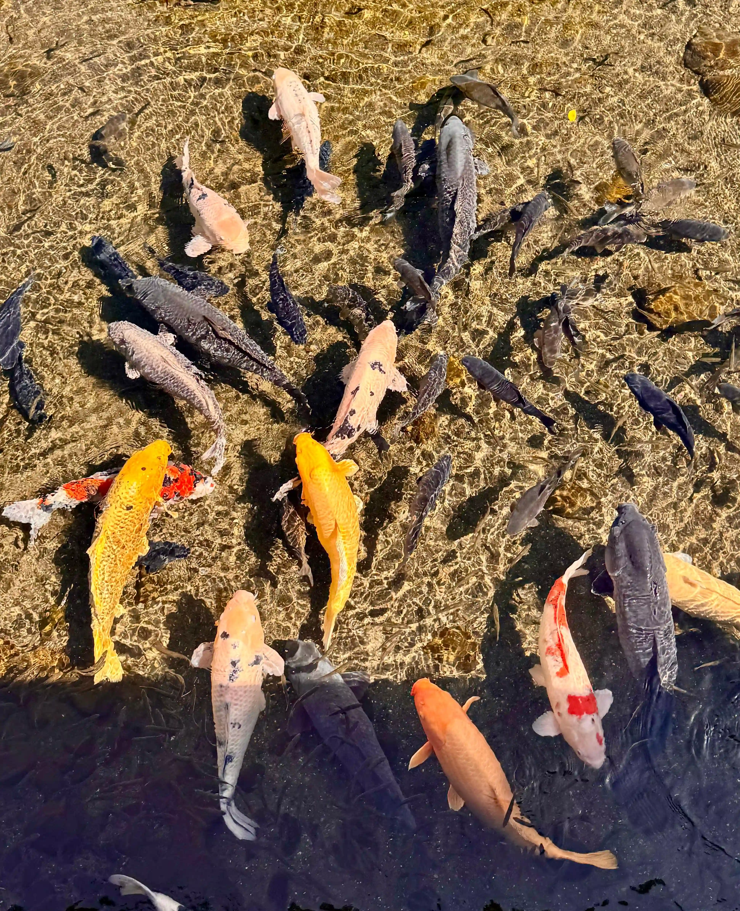
An einem kleinen Stand neben dem Eingang gibt es Futter zu kaufen, auf das sie sich gierig stürzen. Ihre Mäuler machen schmatzende Geräusche und die kleineren Karpfen müssen aufpassen, nicht von den großen eingesaugt zu werden.
Der Weg führt über eine Steinbrücke und an einem Tempel vorbei. Bevor man japanische Tempel betritt, muss man die Hände, das Gesicht und manchmal auch den Mund reinigen. Im weitesten Sinne ist das ähnlich wie beim katholischen Weihwasser, denn links neben dem Eingang ist ein Brunnen mit reinigendem Wasser.
Wir befolgen die Regeln, die für Ausländer daneben angebracht sind: Mit der Wasserkelle erst die linke, dann die rechte Hand waschen, dann etwas davon in den Mund nehmen (nicht schlucken!) und zum Schluss das restliche Wasser über den Stiel der Kelle fließen lassen, um auch die Kelle wieder rein zu waschen.
Im Tempel ist es ruhig und wir schlendern durch die Gebäude und schauen in den Raum des Hauptgebäudes herein. Davor klatschen wir zweimal laut (damit die Götter uns beachten), werfen einen Obolus in die Spendenkiste und legen die Hände zusammen, um zu beten. Am Ende wird wieder zweimal geklatscht.
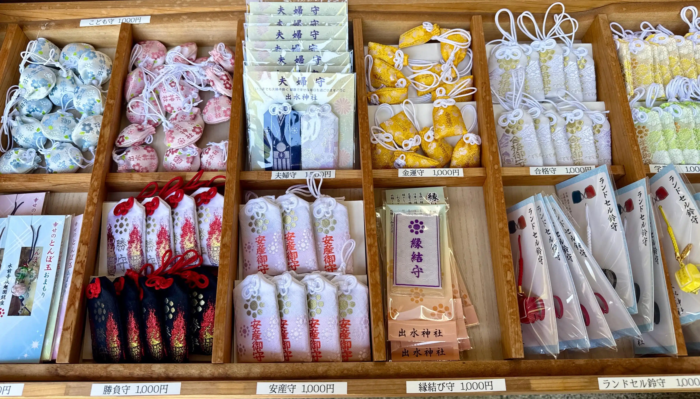
In einem Info-Häuschen neben dem Gebäude gibt es Segenssprüche als Anhänger zu kaufen, die man sich an den Schlüsselbund hängen oder zuhause an einen sicheren Ort legen kann. Jedes dieser kleinen, versiegelten Stoffsäckchen beinhaltet Segen für einen anderen Lebensbereich.
Weiter geht es durch den Garten: Es bleibt still, nur ein paar Vögel tapsen über den ordentlichen Rasen oder springen von Tanne zu Tanne. Der Weg führt in einer großen Runde um den Teich herum und endet wieder am Eingang.
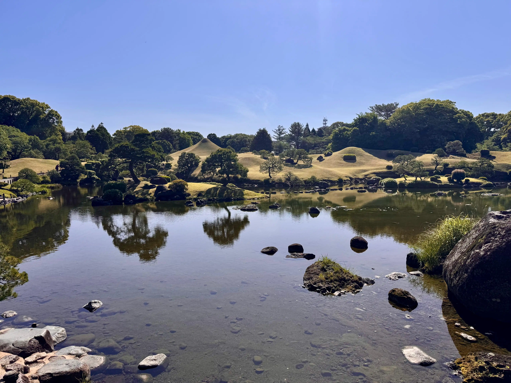
Unter einem großen, hellgrünen Laubbaum machen wir Rast und genießen die Aussicht auf den Teich und den Mini-Fuji dahinter. Gurrende Tauben warten nur darauf, dass ich ihnen ebenfalls etwas vom Koi-Futter zuwerfe und gucken mich mit großen Augen an. Natürlich kann ich nicht anders und füttere sie und auf einmal ist ein ganzer Schwarm bei uns und das Futter schnell leer. Sie sind so zahm, dass sie sogar aus der Hand fressen. Die Warnschilder vor den Tauben scheinen also nicht von irgendwoher zu kommen.
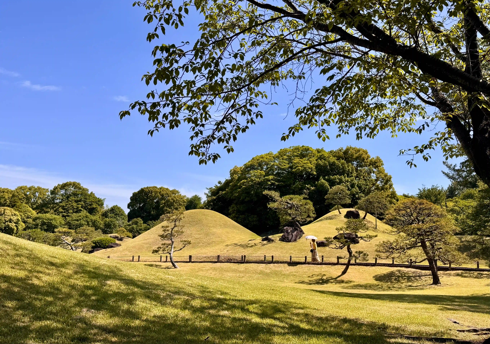
Als wir gerade den Suizenji verlassen wollen, stürmt eine chinesische Reisegruppe den Park. Die Frauen sind alle in traditioneller japanischer Kleidung angezogen und posen im Tempel und im Park. Das habe ich schon einige Male im letzten Urlaub und auch in Thailand gesehen, aber irgendwie ist es jedes Mal ein bisschen lustig. Die Fotos sehen hinterher sicher toll aus, aber von außen sind es einfach 25 gleich angezogene Chinesinnen, die den Garten und Tempel als Kulisse missbrauchen.
Als kleinen Brunch gönnen wir uns Dango, Reismehlbällchen am Spieß mit süßer Sauce. Sie sind verpackt in einem kleinen Holzbecher und wunderbar chewy. Lange halten sie den Hunger aber nicht auf, also geht es – natürlich – auf dem Rückweg ins Hotel zum FamilyMart.
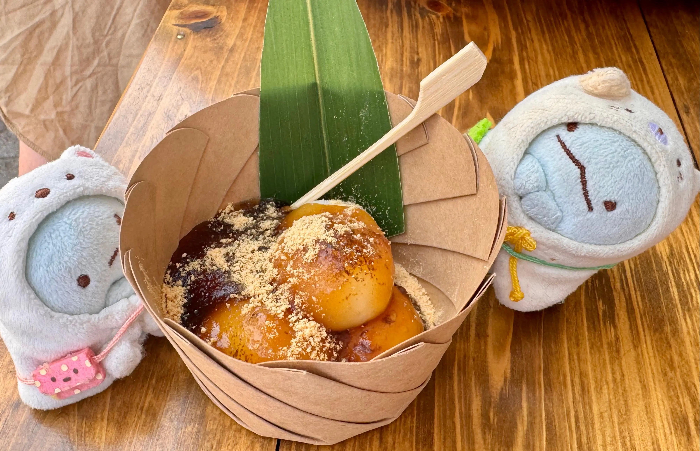
Nach einer kleinen Pause fahren wir mit der Straßenbahn zum Hauptbahnhof, weil es direkt daneben noch ein großes Einkaufszentrum gibt. Was soll ich sagen. Was wäre schon ein Tag in Japan, ohne sich etwas Schönes zu kaufen? 😎
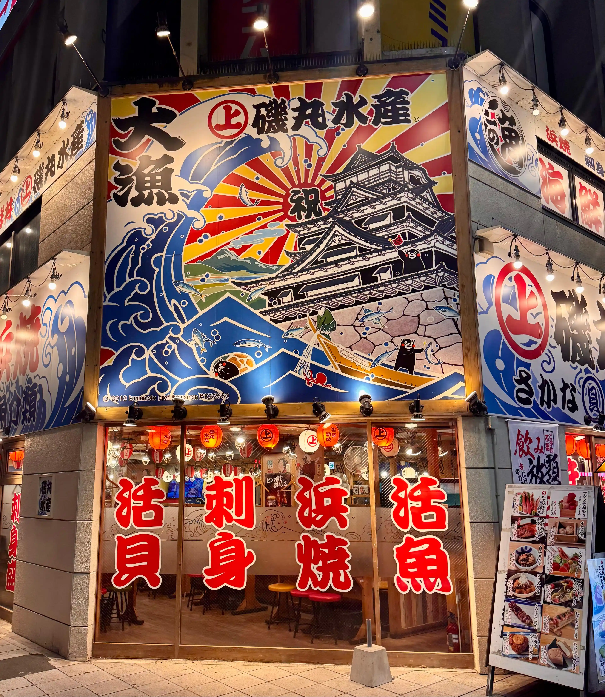
Ein letztes Mal genießen Mama und ich das Rooftop-Onsen. Einmal noch richtig einweichen, denn in unserem nächsten Hotel werden wir keine Badewanne haben. Also noch ein letztes Mal das warme Wasser genießen und dann Abschied nehmen von dem Ausblick, der Burg und von Kumamoto.
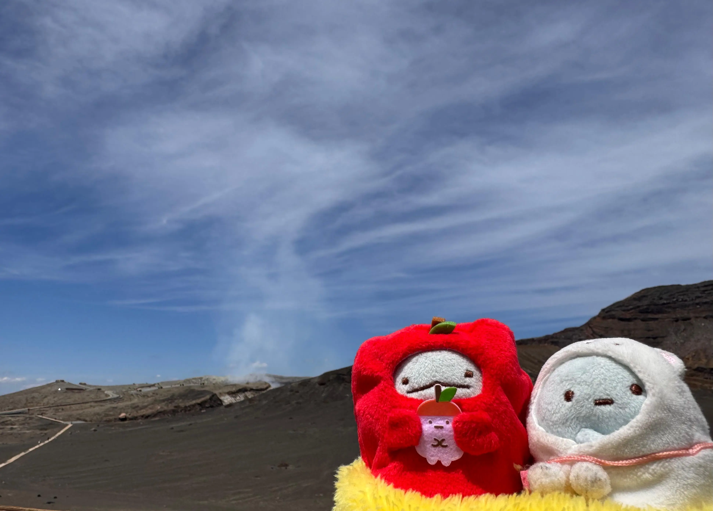